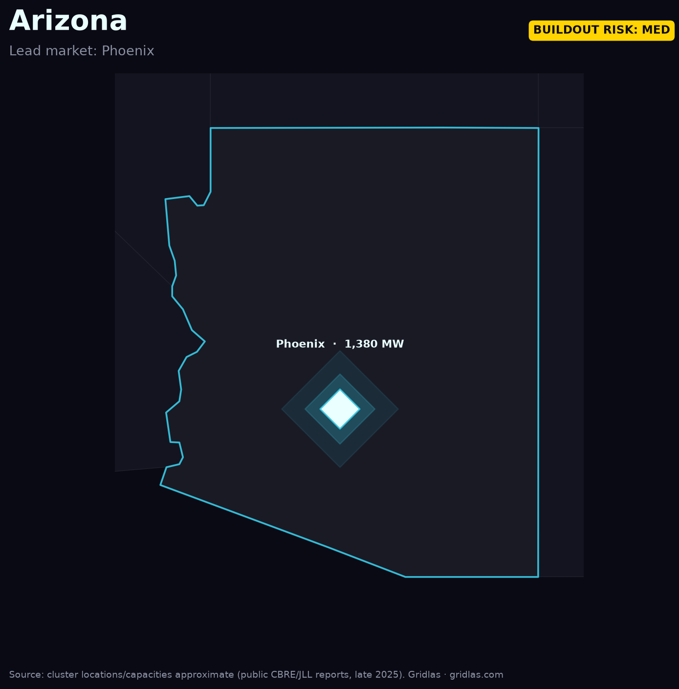

Home / Data centers by region / Phoenix, Arizona
A desert metro that became one of America's fastest-growing data-center hubs — and now contends with both grid and water limits.
Greater Phoenix has climbed into the top tier of U.S. data-center markets, with an estimated ~1,380 MW of capacity across 100+ facilities spanning Mesa, Chandler, Goodyear, and the West Valley. Cheap land, tax incentives, and low natural-disaster risk pulled hyperscalers in fast.

The constraint here is twofold: utilities APS and SRP face the same multi-year interconnection pressure as the rest of the country, and the desert adds a water dimension to cooling-heavy AI workloads. Both push new builds toward air-cooling and on-site generation deals.
Arizona is a leading indicator for Sun Belt growth: how it balances incentives, grid capacity, and water will shape whether the next wave of Western data-center demand lands here or routes to Texas and the Mountain West.
See the full ranking. The Gridlas report ranks every major U.S. metro by capacity and pipeline, with high-res maps and the underlying dataset — from public EIA, LBNL & ERCOT data.
Get the report →